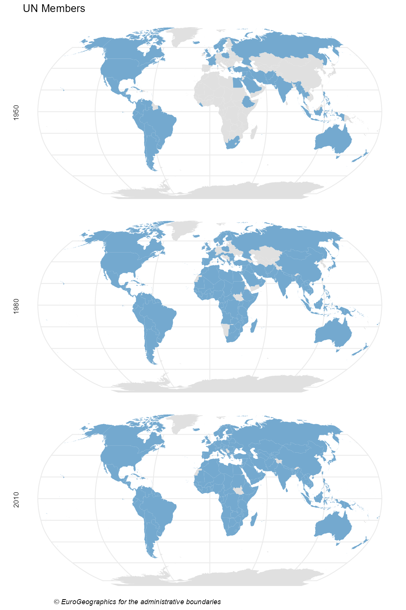

Maps are a powerful tool to show data. As the scope of igoR are the InterGovermental Organizations, mapping and IGOs are a perfect match.
This vignette provides some geospatial visualizations using the IGO datasets (Pevehouse et al. (2020)) included in this package. Specific packages used for geospatial data:
-
giscoRfor extracting the shapefiles of the countries. -
ggplot2for plotting.
Also countrycode is a very handy package for translating between coding schemes (CoW, ISO3, NUTS, FIPS) and country names.
library(igoR)
# Helper packages
library(dplyr)
library(ggplot2)
library(countrycode)
# Geospatial packages
library(giscoR)Evolution of the composition of UN
The following maps shows the evolution of countries that are members of the United Nations.
First we should extract the data:
# Extract shapes
world <- gisco_get_countries(year = "2010")
un <- igo_search("UN", exact = TRUE)
# Extract three dates - some errors given that ISO doesnt have every COW Code
# Also join with world sf
UN1950 <-
igo_members("UN", 1950) %>%
mutate(ISO3_CODE = countrycode(ccode,
"cown",
"iso3c",
warn = FALSE
)) %>%
left_join(world, .) %>%
mutate(year = 1950) %>%
select(year, orgname)
UN1980 <-
igo_members("UN", 1980) %>%
mutate(ISO3_CODE = countrycode(ccode,
"cown",
"iso3c",
warn = FALSE
)) %>%
left_join(world, .) %>%
mutate(year = 1980) %>%
select(year, orgname)
UN2010 <-
igo_members("UN", 2010) %>%
mutate(ISO3_CODE = countrycode(ccode,
"cown",
"iso3c",
warn = FALSE
)) %>%
left_join(world, .) %>%
mutate(year = 2010) %>%
select(year, orgname)
# Join all
UN_all <- bind_rows(UN1950, UN1980, UN2010)Note that the map is not completely accurate, as the base shapefile contains the countries that exists on 2016. Some countries, as Czechoslovakia, East or West Germany are not included.
Now we are ready to plot with ggplot2:
ggplot(UN_all) +
geom_sf(aes(fill = orgname), color = NA, show.legend = FALSE) +
# Robinson
coord_sf(crs = "ESRI:54030") +
facet_wrap(vars(year),
ncol = 1,
strip.position = "left"
) +
scale_fill_manual(
values = "#74A9CF",
na.value = "#E0E0E0"
) +
theme_void() +
labs(
title = "UN Members",
caption = gisco_attributions()
) +
theme(plot.caption = element_text(face = "italic"))
Number of shared memberships
Shared memberships are useful for identifying regional patterns.
The following code produces a map showing the number of full memberships shared with Australia for each country on the world:
## Number of igos shared - 2014
# Countries alive in 2014
states2014 <- states2016 %>%
filter(styear <= 2014 & endyear >= 2014)
# Shared memberships with Australia
shared <- igo_dyadic("AUL",
as.character(states2014$statenme),
year = 2014
)
shared$shared <- rowSums(shared == 1)
# ISO3 Code
shared$ISO3_CODE <- countrycode(shared$ccode2,
"cown",
"iso3c",
warn = FALSE
)
# Merge with map
sharedmap <-
world %>%
left_join(shared) %>%
select(ISO3_CODE, shared)
# Plot with custom palette
pal <- hcl.colors(10, palette = "Lajolla")
# Plot
ggplot(sharedmap) +
geom_sf(aes(fill = shared), color = NA) +
# Australia
geom_sf(
data = sharedmap %>% filter(ISO3_CODE == "AUS"),
fill = "black",
color = NA,
) +
# Robinson
coord_sf(crs = "ESRI:54030") +
scale_fill_gradientn(
colours = pal,
n.breaks = 10,
guide = "legend"
) +
guides(fill = guide_legend(
direction = "horizontal",
title.position = "top",
label.position = "bottom",
nrow = 1,
keyheight = 0.5,
keywidth = 1.5
)) +
labs(
title = "Shared Full Memberships with Australia (2014)",
fill = "Number of IGOs shared",
caption = gisco_attributions()
) +
theme_void() +
theme(
legend.position = "bottom",
plot.title = element_text(face = "bold", hjust = 0.5),
plot.caption = element_text(
face = "italic",
size = 8,
hjust = 0.05
),
legend.title = element_text(size = 7),
legend.text = element_text(size = 8)
)
Cross-shared memberships
The following map shows how the relationships between the countries of North America has flourished on the last 90 years, using a year as representative of each decade.
# Get shapes
countries.sf <- gisco_get_countries(country = c("USA", "MEX", "CAN"))
# Select years
years <- seq(1930, 2010, 10)
# Shared memberships
USA <- igo_dyadic("USA", c("MEX", "CAN"), years)
CAN <- igo_dyadic("CAN", c("USA", "MEX"), years)
MEX <- igo_dyadic("MEX", c("CAN", "USA"), years)
USA$value <- rowSums(USA == 1)
CAN$value <- rowSums(CAN == 1)
MEX$value <- rowSums(MEX == 1)
# Long data
Final <- USA %>%
rbind(CAN) %>%
rbind(MEX) %>%
select(ccode1, year, value) %>%
mutate(ISO3_CODE = countrycode(ccode1, "cown", "iso3c"))
# Create map
map <- left_join(countries.sf, Final)
# Map
ggplot(map) +
geom_sf(aes(fill = value), color = NA) +
coord_sf(
crs = 2163,
xlim = c(-3200000, 3333018)
) +
facet_wrap(vars(year),
ncol = 3
) +
scale_fill_gradientn(
colors = hcl.colors(10, "YlGn", rev = TRUE),
breaks = seq(0, 100, 10),
guide = "legend"
) +
guides(fill = guide_legend(keyheight = 1.5)) +
labs(
title = "Shared Full Memberships on North America",
subtitle = "(1930-2010)",
fill = "shared IGOs",
caption = gisco_attributions(),
) +
theme_void() +
theme(
plot.title = element_text(face = "bold"),
plot.subtitle = element_text(margin = margin(t = 3, b = 10)),
plot.caption = element_text(
face = "italic",
hjust = 0.05
),
legend.box.margin = margin(l = 20),
legend.title = element_text(size = 8),
strip.background = element_rect(fill = "grey90", colour = NA)
)
References
Pevehouse, Jon CW, Timothy Nordstrom, Roseanne W McManus, and Anne Spencer Jamison. 2020. “Tracking Organizations in the World: The Correlates of War IGO Version 3.0 Datasets.” Journal of Peace Research 57 (3): 492–503. https://doi.org/10.1177/0022343319881175.